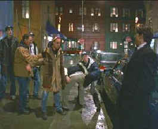

| Eyes
Wide Shut(SE)C+,B+ |
| Warner/1999/159/FS
1.33 |
I am
not really sure what to make of Eyes Wide Shut. I never
really buy the concept that the events depict a dream. Try as
hard as I might, I found no solid indications in the film that I
was watching anything other than one man's abbreviated
odyssey of sexual desire. The slow pacing smacks of
self-indulgence. How many turns around the dance floor does
Alice Harford need to make with the would-be Hungarian lover
with the mellifluous voice?
|
 |
|
Late
night niceties. ©Warner. |
The driving
force behind Bill Harford's sexual odyssey, seduced into a
voyeuristic voyage of the night with casual ease, is never
firmly established. Who in his right mind, even an all-powerful
doctor, knocks on the door of a costume shop owned by a patient
of his at sometime past midnight and when he opens his wallet to
present his AMA identification card, it's like a police badge or
something. Dubious logic is in force at the mansion orgy as
well. There are times when Harford acts like he's play acting a
dirty Hardy Boy mystery.
Some of the
explorations of the male/female relationship are interesting,
and often very honest. Kidman's long, bedroom monologue about
her sailor fantasy is well done, but, it is slow, reflecting
against he overall pacing of the film.
Production design is often powerfully sexual
and accompanied by a striking score with sharp chords
falling like an ax to define the action, these elements along
with the lush cinematography, provide the biggest kick from Eyes
Wide Shut, often overwhelming the thinly constructed story
elements..
Cruise and Kidman are both fine as Bill
and Alice Harford, though Cruise seems rather callow for a
doctor in his position, though maybe there's something more to
that. This
is one off-screen married couple that make a believable couple
on screen. Kidman has never been as sexy and Cruise moves into
what may be his first mature role with grace and confidence. I
found myself feeling slightly voyeuristic watching a married
couple performing on screen due diligence. Even Sydney Pollack does a nice turn as the super rich Harford
patient Victor Ziegler.
A Kubrick film project brings a certain
import to it before it's even made. Such was the case with Eyes
Wide Shut, and the fact that mega stars Cruise and Kidman
opted to dedicate themselves to the Kubrick project, brought
even more attention to the project. Conjecture about the film's
explicit sexual content created a hot Hollywood buzz long before
the film finally opened after the director's death. And
Kubrick's untimely death even created more of a controversial
aura around his movie. Eyes Wide Shut is definitely
worth seeing, though it will more likely induce sleep as opposed
to arousal for most viewers. And yes, this is the R-rated
version replete with the CGI added figures obscuring some of the
more sexual moments, though I personally think it means next to
nothing for the production.
The DVD has the same luxurious look
reflected in the production design. Colors spring to life with
strong vitality. Wood patinas are rich, nights are deep black
and skin tones have a wide range. Contrast range is bold
and the DVD is mostly very sharp, though a few scenes are
slightly soft. The 1.33 framing seems natural to the material.
The Dolby Digital 5:1 surround mix mostly benefits the score.
It's consistently open and powerful. Don't expect much ambient
surround info. Packaged as as special edition by Warner, the DVD
includes interviews with Tom Cruise , Nicole Kidman and Steven
Spielberg.
|
|

 Gary
Morris's insightful publication Bright Lights Film Journal
turns the celluloid in films from a unique perspective. Click on the image above for more pure movie views. Gary
Morris's insightful publication Bright Lights Film Journal
turns the celluloid in films from a unique perspective. Click on the image above for more pure movie views.
 Frank
Darabont is the cover interview in the current online issue of
Fade-In Magazine. Check it out along with other savvy features of
this excellent book. Frank
Darabont is the cover interview in the current online issue of
Fade-In Magazine. Check it out along with other savvy features of
this excellent book.
 Images
is a non-commercial Web site created for everyone
who enjoys movies and popular culture. Images is
published quarterly; however, new reviews will
appear each week, so check back often. Feature
articles are presented with graphic sophistication. Images
is a non-commercial Web site created for everyone
who enjoys movies and popular culture. Images is
published quarterly; however, new reviews will
appear each week, so check back often. Feature
articles are presented with graphic sophistication.

Home Vision Cinema
Classic and foreign motion pictures on VHS tape. The title selection is excellent and
informative essays are provided for many of the films.
DVDRama
is one of France's outstanding DVD resources. Par le vous DVD?

The
Feature
Archive has articles ranging from Akira
Kurosawa to Blonde
Bimbos and John
Ford.

Click on the image of The
Heistmasters for an interesting feature on the tough guys
that pull off the big jobs.

The
Movie Poster Archive include extensive poster images from the
films of stars like Susan Hayward, Kirk Douglas, Katharine
Hepburn and many more. This month's featured star is Kirk
Douglas.
|